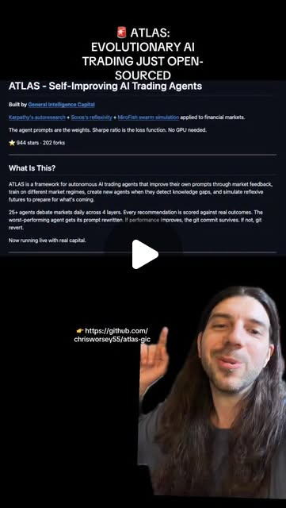
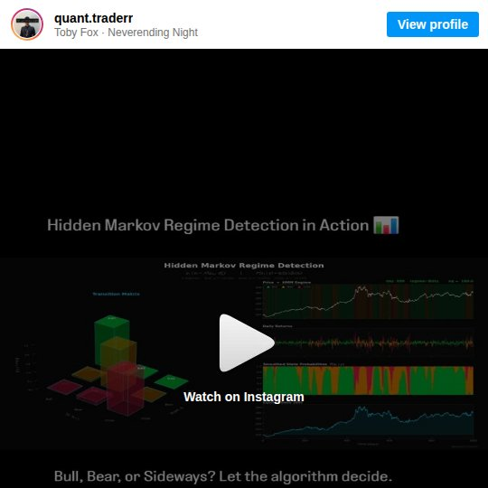
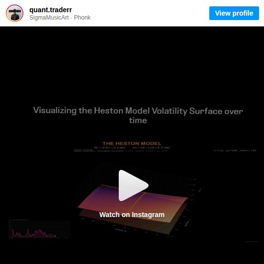
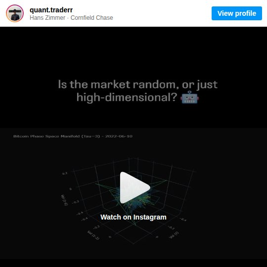
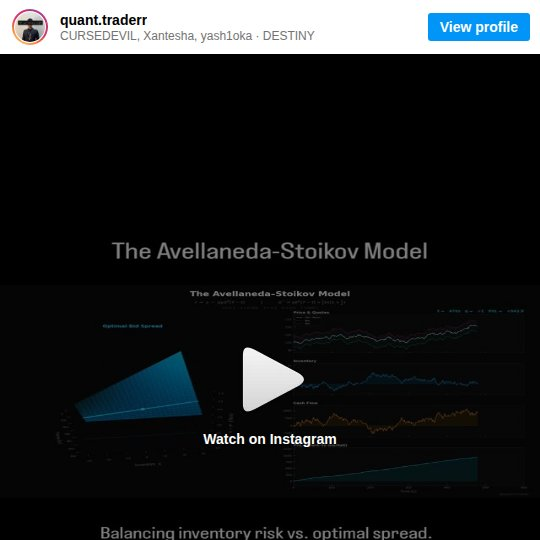
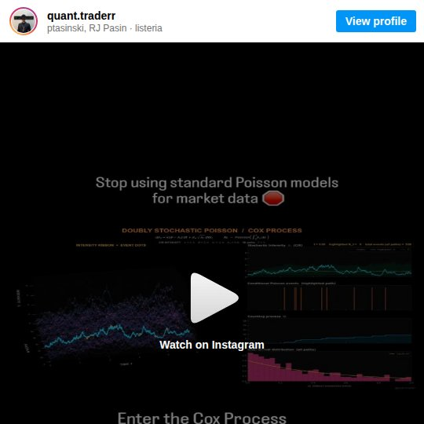

arbitrage_opportunity
25 Agents Walk Into a Market: AI-Powered Trading Infrastructure
Quantitative finance is being rebuilt on AI agents — not as black-box predictors, but as multi-agent debate systems that combine physics models, regime detection, and autonomous execution.
Python
Try It — Action Sketch
Build regime detection with HMMs → layer Heston vol surface for options → add phase space reconstruction for hidden dynamics → implement A-S market making for execution → wrap in multi-agent debate system where agents specialize by model type → score on real P&L, not backtest metrics.
Prerequisites: Python, basic stochastic calculus concepts, market data API access. Familiarity with at least one quant model.
Connected Posts (6)

25+ autonomous agents debate every trading day across 4 layers and evolve in real time — • Real-outcome scoring on ev...
25+ autonomous agents debate every trading day across 4 layers and evolve in real time. — @marc.kaz; demonstrates AI agents, algorithmic trading.

Hidden Markov Models — detecting market regime shifts automatically
Uses HMMs to mathematically deduce hidden market states from observable returns and volatility. Identifies low-vol bull, high-vol bear, and recovery regimes. Better than lagging indicators for strategy selection.

Heston Model — stochastic volatility for realistic options pricing
Explains why Black-Scholes fails (constant vol assumption) and how the Heston Model introduces stochastic volatility. Captures the volatility smile and skew that basic models miss. Essential for options pricing.

Phase Space Reconstruction — unfolding hidden BTC volatility dynamics
Uses Phase Space Reconstruction (PSR) with time delay tau=3 to unfold BTCUSD volatility into a multi-dimensional manifold. Reveals whether market is in stable regime or chaotic transition. Key for quantitative regime detection.

Avellaneda-Stoikov — optimal spread calculation for market makers
The Avellaneda-Stoikov model solves the stochastic control problem for market making. Calculates optimal bid-ask spread based on volatility, time horizon, and inventory. Foundation of modern HFT market making. DM-bait for code repo.

Cox Process — doubly stochastic Poisson for bursty market events
Standard Poisson processes assume constant event rates, but markets are bursty. The Cox Process (Doubly Stochastic Poisson) uses a CIR-driven random intensity to model trade arrivals, defaults, and volatility spikes more realistically.
Deeper Dive generated 2026-07-07T09:32:38.469013 · Curated by Claude for Gabe (@6ab3) · dejaviewed.com